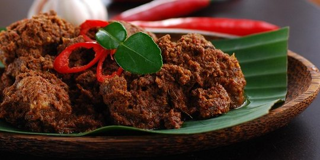
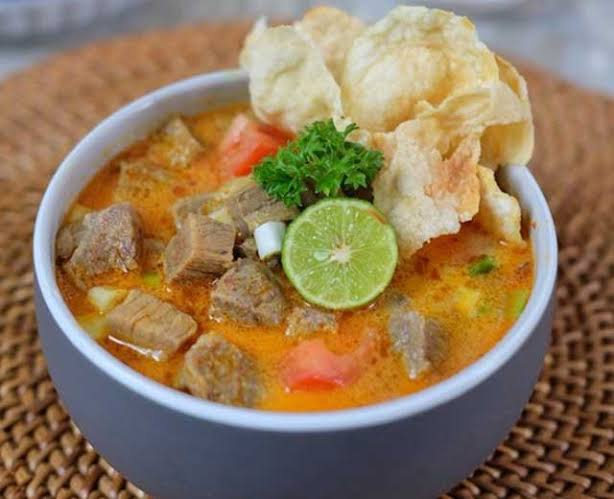

Resep Terkenal

Rendang khas Padang
Masakan daging yang dimasak dalam santan kelapa dan bumbu rempah-rempah kaya.

Soto khas Betawi
Terkenal dengan kuah santan yang kental dan kaya rasa.

Rawon khas Jatim
Memberikan kombinasi rasa yang kaya dan menggugah selera.